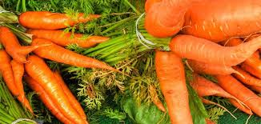

Carrots

- The carrot is a root vegetable, most commonly observed as orange in color, though purple, black, red, white, and yellow cultivars exist, all of which are domesticated forms of the wild carrot, Daucus carota, native to Europe and Southwestern Asia
- Raw carrots are healthy It is crunchy, tasty, and highly nutritious. Carrots are a particularly good source of beta carotene, fiber, vitamin K1, potassium, and antioxidants. They also have a number of health benefits. They're a weight-loss-friendly food and have been linked to lower cholesterol levels and improved eye health
- They also have a number of health benefits. They are a weight loss friendly food and have been linked to lower cholesterol levels and improved eye health.
- What is more, their carotene antioxidants have been linked to a reduced risk of cancer. Carrots are found in many colors, including yellow, white, orange, red, and purple.
- Orange carrots get their bright color from beta carotene, an antioxidant that your body converts into vitamin A.
- The carrot salad improves the ratio of progesterone to estrogen and cortisol, and so is as appropriate for epilepsy as for premenstrual